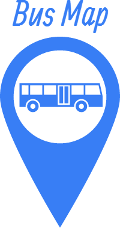

<ion-list>
		<label class="item item-input">
		    <i class="icon ion-search placeholder-icon"></i>
		    <input type="text" placeholder="Busca">
		</label>
        <div class="list">
		   <a class="item item-avatar"  ng-repeat="Linha in Linhas track by $index">
		      
		      <h2> LINHA {{ Linha }} </h2>		      
		    </a>
        </div>
</ion-list>